Comment jouer ?
Comment gagner ?
Il y a 4 façons différentes de gagner :
• Posséder toute une ligne du plateau
• Si vous possédez les quatre saisons
• Si vous êtes le dernier joueur “en vie” ou qui n'a pas fait faillite
• Si, au bout de 20 tours de plateau, vous possédez la meilleure moyenne HealthyBar & Blé.
A qui de jouer ?
Le nom du joueur dont c'est le tour s'affiche en haut à gauche.
A votre tour !
Vous pouvez désormais modifier vos propriétés (cf. Modifications de propriété)
C'est à vous de lancer les dés, ce qui fera avancer votre pion.
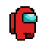
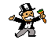
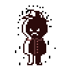
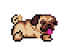
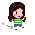
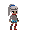
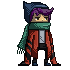
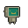
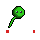

Si vous faites un double, vous rejouez. Si jamais vous effectuez 3 doubles à la suite vous allez directement à la case diète et ce pendant 3 tours.
En fonction de la case sur laquelle vous vous arrêtez, vous devrez, dans la plupart des cas, effectuer une action (cf. Types de cases et cases spéciales).
Dès que votre tour est fini, la main passe au joueur suivant.
Types de cases
Terrains
|
Vous pouvez acheter la propriété sur laquelle vous vous arrêtez en payant le prix indiqué sur la case. Vous recevrez en échange, comme preuve de cette acquisition, une carte de propriété. |
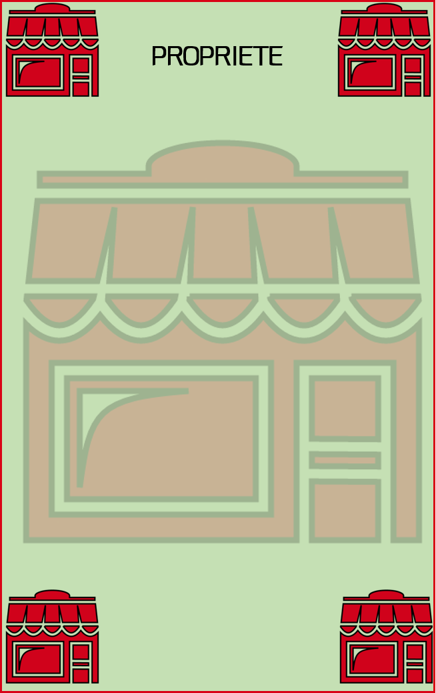 |
Saisons
|
Posséder la saison augmente le montant du loyer de toutes les propriétés de la ligne. Posséder 3 maisons sur cette même ligne vous permet d’améliorer le terrain. |
Chance
|
Piocher une carte de type chance vous fera faire une action au hasard sur le jeu, allant du bonus de type financier à l'obtention de la carte CheatMeal... Mystère, mystère ! |
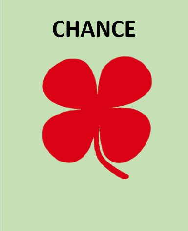 |
Communauté
|
Piocher une carte de type chance vous fera faire une action au hasard sur le jeu, allant du bonus de type financier mais aussi au malus en tout genre jusqu'à l'obtention de la carte CheatMeal... Mystère, mystère ! |
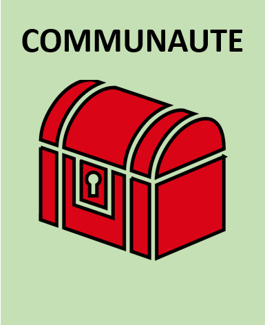 |
Questions
|
Cette nouvelle cases du jeu vous permettra d'en apprendre beaucoup plus concernant les bonnes habitudes alimentaires à avoir. De plus, chaque bonne réponse pourra vous rapporter des bonus ! |
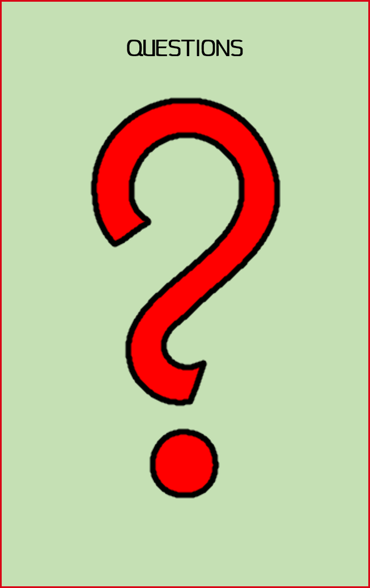 |
Cases spéciales
Case départ
|
Dès que vous passez par cette case vous gagnez 200 B. Si vous vous arrêtez dessus, vous gagnez le double : 400 B. |
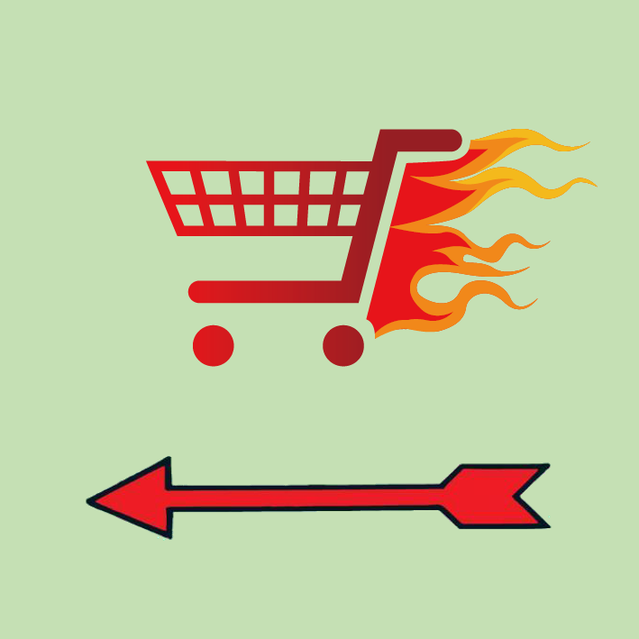 |
Panier garni
|
Vous gagnez tout l’argent du milieu de plateau et diminuez votre pulsation cardiaque de 20 ! |
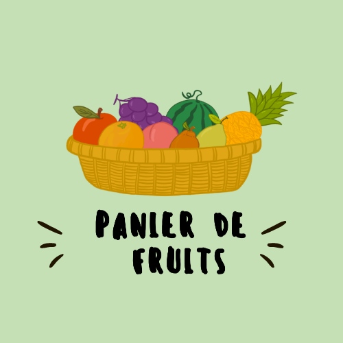 |
Aller en diète
|
Rendez-vous au “Centre diététique”, sans toucher votre salaire de 200 B. Pour sortir, vous devez répondre correctement à une question ou disposer d'une carte CheatMeal. |
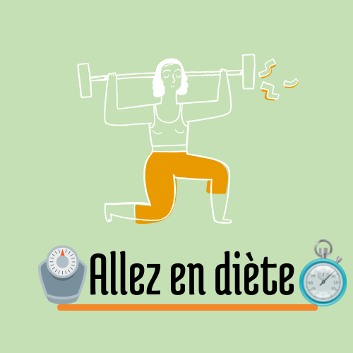 |
Visite du centre / Centre diététique
|
Si vous n’êtes pas en diète, vous passerez par la case visite du centre. Cette case n’a aucun impact sur votre vie de joueur, elle vous sert juste à observer ceux qui se sont laissés aller.
|
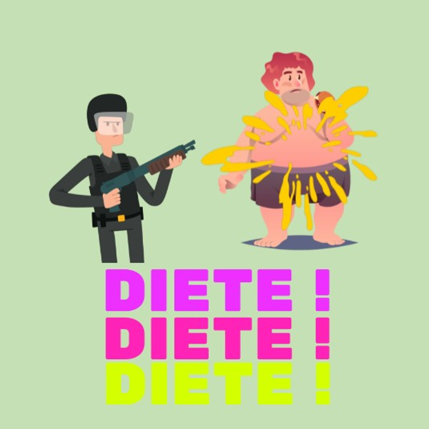 |